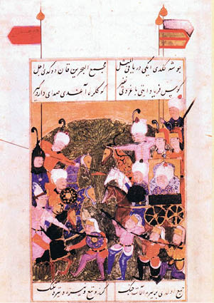

VIII : II. BAYEZİD
1481-1512
Mehmed’in vâris olarak bıraktığı iki oğlundan büyüğü yani Bayezid, yirmi beş yaşında tahta çıkmıştır. Von Hammer ve yazılarını Hammer’a dayandıran diğer tarihçiler Bayezid hakkında kötüleyen yazılar yazmıştır; bunun nedeni de Bayezid’in, diğer Osmanlı padişahlarının aksine, imparatorluğuna büyük katkılar yapamamış olmasıdır. Bir hükümdarın başarısı yalnızca, toprakların genişlemesi açısından ölçülecek olsaydı, Bayezid, Osmanlı İmparatorluğu’nu kuran ve zirveye taşıyan diğer dokuz padişah arasında en alt sırada kalırdı. Osmanlı İmparatorluğu gibi büyük bir imparatorluk da daha fazla fetihler gerçekleştirmek için savaş yerine barışı seçerek daha iyi sonuçlara ulaşabilir. İmparatorluğun sınırlarını Tuna Nehri’nden ileriye, kuzeye doğru, genişletmek adına girişimlerde bulunulmasaydı Osmanlı İmparatorluğu için daha hayırlı olabilirdi. Gerçekleştirmiş olduğu eylemlerden anlaşıldığı kadarıyla, Bayezid imparatorluğun daha fazla genişlemesinden yana değildir. Bir dönem, Macaristan, Venedik ve Mısır ile savaş içinde olmuş olmasına rağmen saldırıyı başlatan taraf olmamıştır. Barışın mümkün olduğu zamanlarda bu güçlerle barış anlaşmaları yapmıştır. Selefinin komutası altında İtalya’yı kuşatan ve Otranto’yu ele geçiren orduyu desteklememiştir. Bu orduyu kumanda eden Komutan Ahmed Kedük’ü tekrar imparatorluğa çağırmıştır. Daha sonra komutanlığı üstlenen Hayreddin Paşa, yiğit bir savunmanın ardından, teslim olmaya zorlanmış ve bu olaydan sonra İtalya bir daha Türk orduları tarafından kuşatılmamıştır. İtalyan topraklarının peşinde koşmama kararı ise Bayezid açısından akıllıca verilmiş bir karar olmuştur.
Bu kitabın amacının Osmanlı sultanlarının eksiksiz tarihini yazmanın aksine, imparatorluğun ilk zamanlarındaki büyümesini ve daha sonraki yıllarda yaşanan parçalanmayı anlatmak olduğundan, Bayezid’in nispeten olaysız seyreden hükümdarlığına birkaç sayfadan fazlası ayrılmayacaktır. Fakat Bayezid’in sakin bir mizaca sahip olduğundan, inançlarına düşkünlüğünden ve babasının kötü alışkanlıklarına sahip olmadığından bahsetmekte fayda vardır. Kendi milletinin çoğu gibi o da edebi çalışmalar üzerinde yoğunlaşmış ve şair olarak ün kazanmıştır. Sefere gitmesi gerektiğinde kudret ve kahramanlık göstermemiştir. Kendi soyunun aksine ordularını sürekli olarak savaşa göndermemiştir.
Fatih Sultan Mehmed öldüğünde yirmi iki yaşında olan diğer şehzadesi Cem, Bayezid’den daha atılgan, cesur ve hırslı bir askerdir ve daha güçlü bir kişiliğe sahiptir. Duygusal bir yaradılışı vardır ve şair olarak ağabeyi Bayezid’den daha büyük bir üne sahiptir. Şiirleri, Türk edebiyatında önemli bir yere sahiptir. Başından geçen olaylar ve kötü kaderi Türk tarihinin öykülerinden birine konu olmuştur. Yeni bir hükümdarlık döneminin başlangıcında öldürülmemiş olan şehzadeler gibi Cem’in de Bayezid’e karşı silahlanmış ve taht kavgası başlatmış olması, hakkında söylenmesi gereken olaylardandır. Fatih Sultan Mehmed’in ölümü üzerine İstanbul’a ilk varan ise Bayezid olmuştur. Bayezid çok fazla hediye vermeden Yeniçerilerin desteğini kazanmıştır. Kardeşiyle, beyhude, anlaşma sağlamaya çalıştıktan sonra Bayezid, Ahmed Kedük’ün yardımıyla, Cem Sultan adına başlatılan isyanları bastırmayı başarmıştır. İkinci yenilgiden sonra Cem Sultan Mısır’a kaçmış, orada yaşadığı sayısız maceradan sonra Rodos adasına gitmiş ve Kudüs Şövalyelerinden barınma talep etmiştir. Mehmed’e karşı adayı kahramanca savunmuş ve cesur bir savaşçı olan şövalyelerin başı d’Aubusson ise kurnaz ve hain bir düzenbazdır. Bir yandan, Cem Sultan’ın Osmanlı tahtına geçmesi durumunda şövalyelere tanınacak imtiyazları içeren bir anlaşmayı Cem Sultan’a imzalatmaya çabalarken diğer yandan Cem Sultan’ın himayesinin sürdürülmesi ve Rodos adasından kaçmasını engellemek için Sultan Bayezid ile yıllık 45.000 akçelik ihtiyat payı alacağına dair bir anlaşma imzalamıştır. Bu anlaşamaya dayanarak, Cem Sultan önce Rodos’ta daha sonra da Fransa Sasesnage’de bir kalede, şövalyelerin emriyle, yedi yıl mahkum olarak tutulmuştur. Bu sürenin sonunda, Fransa Kralı VIII. Charles şehzadenin lehine olacak şekilde duruma müdahale etmiş ve şehzadeyi Roma’ya Papa’nın himayesine göndermiştir. Papa Callixtus da Cem Sultan’ın üzerinden kendine çıkar sağlamıştır. Cem Sultan’ın Bayezid’e herhangi bir sorun çıkarmasını engellemek adına Sultan Bayezid ile yıllık 45.000 akçelik ihtiyat payı alma hususunda anlaşmaya varmıştır. Birkaç yıl sonra Callixtus’un ölümü üzerine halefi Papa Alexander Borgia, padişah ile yapılmış olan anlaşmayı, Cem Sultan’ın mahkûmiyetini sürdürmek yerine onu öldürmeyi teklif ederek 300.000 akçe karşılığında yenilemiştir. Fransa kralının olaya müdahale edeceğinden korktuğu için bu infazı gerçekleştirememiş; fakat bahsi geçen meblağı cebine indirme gayesinde şehzadeyi zehirleyerek öldürmüştür. Böylece padişahı tehdit eden tehlike nihayetinde ortadan kaldırılmış; fakat İmparatorluk, günün koşullarına göre gerekçelendirilebilen bir sonucu olan başka bir iç savaşla karşı karşıya kalmıştır.
Cem Sultan
Bayezid’in hükümdarlığı süresince yaşanan hadiselerden en önemlisi, saltanatının ikinci yılında seleflerinin egemenliğinde tâbi devlet olan Hersek’i tamamen boyunduruk altına almak olmuş; fakat sonradan tekrar kuşatılmıştır. Nihayetinde, imparatorluğun bir eyaleti haline getirilmiştir. Ayrıca, Macaristan ile yıllarca istikrarsız bir şekilde yapılmış, her iki devletin birbirinin topraklarına akınlar düzenlediği ve gaddarlık konusunda birbirleriyle yarıştıkları savaşlar yaşanmıştır. Her yerde çocuklar kazıklara oturtulmuş, genç kızlar ailelerinin, evli kadınlar ise kocalarının gözlerinin önünde tecavüze uğramış ve binlerce mahkûm köle olarak satılmıştır. Fakat bunların dışında bir sonuca ulaşılamamış ve nihayetinde iki devlet arasında barış imzalanmıştır.
Asya’da, Mısır ve Suriye Memlukları hükümetleriyle beş yıl süren bir savaş yaşanmıştır. Memluklar, Karaman’da çıkan isyana destek olmak için ordu göndermiştir. İsyan bastırılmış ve Karamanlar nihayet boyun eğmiş; fakat Memluklar Türk ordularını üç büyük savaşta yenilgiye uğratmıştır. Barış nihayetinde sağlanmış; fakat Anadolu’da üç önemli kale Türkler tarafından imtiyazla Memluklara verilmiştir.
Osmanlı ordusu, ayrıca, Venedik Cumhuriyeti ile de savaş içindedir ve bu savaş sırasında Türkler Mora’da, Navarino, Modon ve Coron kalelerini ele geçirmeyi başarmıştır, bu da Yunanistan kıyılarında Venedik etkisini zayıflatmaya neden olan bir başarı olmuştur.
Bu başarının en önemli nedeni, Akdeniz’de Fatih Sultan Mehmed zamanında diğer deniz güçlerinin üzerinde bir egemenlik kurmayı başarmış olan Türk donanmasının büyüklüğünden kaynaklanmaktadır. Türk donanması 1499 yılında Lepanto’da ciddi bir savaşta Vedenik filosunu yenilgiye uğratmış ve aynı şartlarda Vedenik, Avusturya ve Papa’nın filolarından oluşan bir donanmayla 1500 yılında karşı karşıya gelmiştir. İspanya’da Hıristiyan ordusu tarafından ciddi bir baskı altına alınmış olan Türk ordusu daha da uzaklara açılmış ve İspanya kıyılarını yıkıp geçmiştir.

Sultan II. Bayezid ile Şehzade Selim arasındaki savaşı tasvir eden minyatür
Bayezid’in muvaffakiyetli geçen hükümdarlığının son iki yılı, oğlu ve halefi olan Selim’in çıkarmış olduğu başka bir iç savaşla gölgelenmiştir. Selim, Bayezid’in üç oğlunun arasında en küçük olandır. Üç oğlu da Asya’daki vilayetlerin valileri olarak önemli görevlere sahiptir. Bayezid tarafından tahtın vârisi olarak belirlenen ortanca şehzade Ahmed, babasının gözdesidir. Fakat Selim üç şehzade arasındaki en muktedir ve cesaretli olandır. Selim, tahta çıkmayı garanti altına alarak, yaşlanmakta olan ve sağlığı bozulan babasının ölümünü beklemiştir. Valilik mevkiinden neredeyse bir ordu büyüklüğündeki birlikle ayrılarak İstanbul’daki babasına davetsiz bir ziyarette bulunmuş ve orada entrikalar çevirmiştir. Selim, Sultan Bayezid’in uzun süredir savaşa çıkmamasından hoşnutsuzluk duyan Yeniçeriler tarafından desteklenmiş ve yeni fetihler umuduyla Selim’in egemenliğinde yağmalama başlamıştır. Bayezid ise ordusunun bir kısmı tarafından desteklenmiş ve oğlunu bozguna uğratmayı başarmıştır. Bunun üzerine Selim, yeni bir ordu kurduğu Kırım’a kaçmış ve daha sonra Karadeniz’in kuzeyinden cebri yürüyüşle tekrar İstanbul’a yürümüştür. Vardıklarında ise tam tekmil bir Türk ordusu tarafından desteklenmiştir.
Selim’in emri üzerine Yeniçeriler imparatorluk sarayının girişine dayanmış ve sultanın kendilerini kabul etmesini talep etmişlerdir. Sultan, Yeniçerilere boyun eğmiş ve aralarından bir temsilci heyetini huzuruna kabul etmiştir. Tahtına kurulu bir şekilde isteklerinin ne olduğunu sormuştur. Yeniçeriler, “Padişahımız yaşlı ve hastadır; biz Selim’in sultan olmasını talep ediyoruz.” demiştir. Bayezid ordusunun hiçbir bölüğüne güvenemeyeceğini anlayarak boyun eğmiştir. “Oğlum Selim için tahttan çekiliyorum. Allah hükümdarlığını muvaffak kılsın.” demiştir. Yalnızca doğduğu topraklar olan Anadolu’ya çekilmesine izin vermelerini talep etmiştir. Bunun üzerine Selim eski padişahı saygıda kusur etmeyerek şehrin dışına göndermiş ve Bayezid de yolculuğuna başlamıştır. Fakat kendisine yapılmış olan hainlikten şüphe duymaksızın üç gün sonra vefat etmiştir. Bayezid’in tahttan indirilmesi ise Yeniçerilerin artan gücünü göstermesi açısından ilginç ve önemli bir hadisedir. Bayezid zamanından beri yalnızca en güçlü olan sultan, Yeniçerilerin üstesinden gelebilmiş ve imparatorluğu var etmek için yaptıkları onca şeye rağmen Yeniçeriler, imparatorluğun çökmesinin nihayetinde en önemli nedenlerinden biri olmuştur.
Kendi ırkının diğer mensupları gibi Bayezid de sakin mizacı ve refah düşkünlüğüne rağmen acımasız bir insandır. Kardeşi Cem’in zehirlenerek öldürülmesine sebep olmuştur. Bu, aile hukukuna uygun bir durumdur. Diğer ve daha ciddi bir örneği ise Cem Sultan’ın isyanını bastırma konusundaki başarısından dolayı büyük minnettarlık duyduğu kumandan Ahmed Kedük’ü öldürmesi olmuştur. Ahmed, sultanın barış politikasına düşüncesizce muhalif bir tavır takınarak sultana karşı çıkmış ve Bayezid de bu gafil davranışı cebren ortadan kaldırmıştır.
Bayezid’in otuz bir yıllık hükümdarlığının Türk İmparatorluğu’na sağlamış olduğu sonuçlar bir yandan Hersek’in topraklara katılması ve Venediklilerin Mora’dan ihraç edilmesi iken diğer yandan ise Anadolu’daki üç kalenin Mısır Memluklarına verilmesi ve Güney İtalya’dan çekilmiş olunmasıdır.